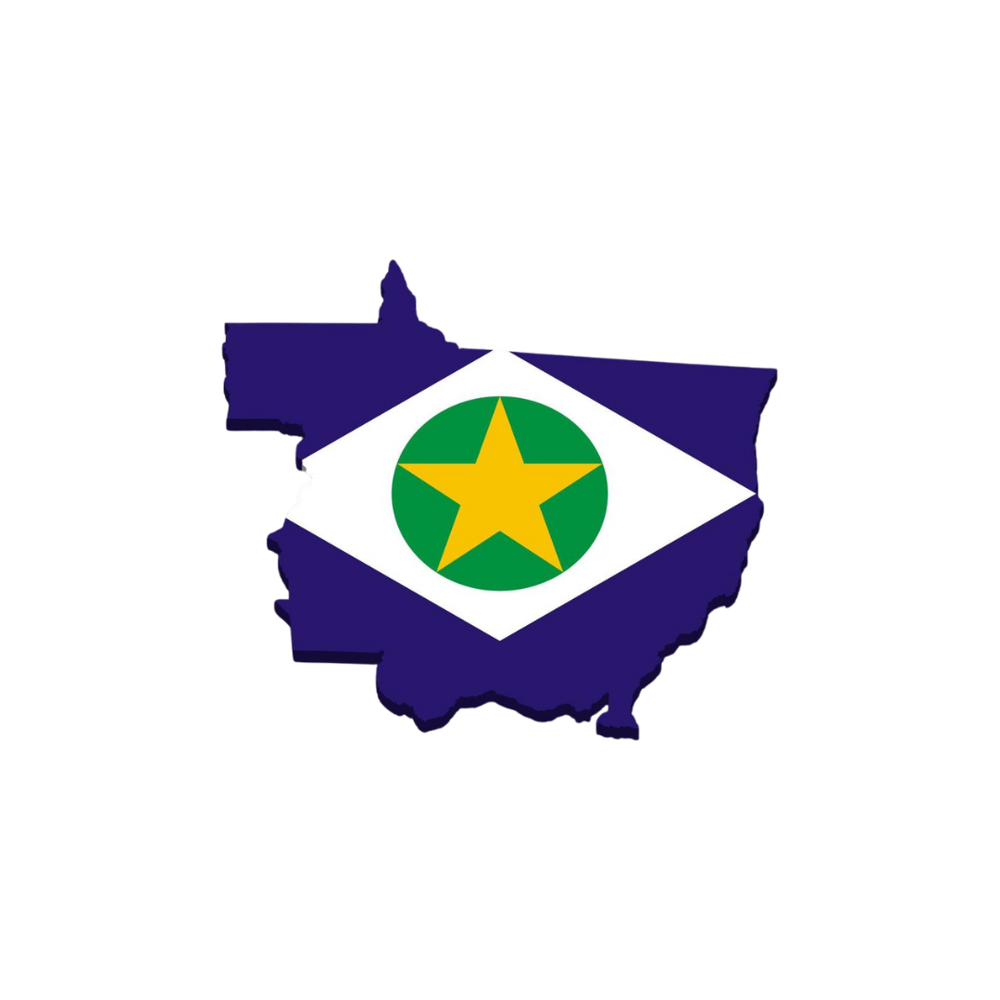

A região de Mato Grosso, no Brasil, se destaca como um dos maiores polos agropecuários do país, contribuindo significativamente para a economia nacional e global. Dividido em várias regiões (Sul, Norte, Oeste, Leste), o estado é responsável por uma grande produção de commodities como soja, milho, algodão e carne bovina. Abaixo, você encontrará informações detalhadas sobre os principais produtos, as regiões de produção e os principais compradores de Mato Grosso.
A região Sul de Mato Grosso é um dos maiores polos agropecuários do Brasil, com grande destaque na produção de soja, milho e algodão.
A região Norte de Mato Grosso tem se destacado pela robusta produção agropecuária, especialmente em soja, milho e algodão.
A Região Oeste é notável pela sua produção de soja, milho, algodão e carne bovina, além de ser uma das maiores áreas de pecuária de corte.
A Região Leste é um importante polo agropecuário com destaque para soja, milho e carne bovina.